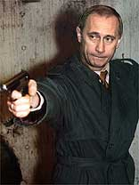

Идите немедленно нахуй.
Отставку никто не нарушает. Просто пришла охота пизднуть. Пиздну — и обратно в отставку. Пока есть пачка сигарет (как у Цоя) и бутылка паршивенького пивка, а радио Ультра радует слух неактуальным говном типа Кобейна или Бон Фан, можно вообразить, что ничего не случилось, и ты такой себе жив. А на самом деле-то нихуя.
Вот и пришла охота пизднуть, как водится, ни о чём.
Даже, точнее, обо всём, что накипело вокруг. О новом клипе ДеЦла, и о как много связано в личной жизни с ним. О молодёжном Движении «Идущие вслед за Путиным». И о как много связано с ним. И о песне Black Hole Sun известной группы (названье забыл). Некоторые придурки не понимают, как плохо с здоровьем всё. Стал путать и забывать — наследственное это у нас. От папиньки, а у того от витаминов не было потому что во время войны. А может, и от Путина самого!..
Некоторая такая пунктирность мышления (или «нонселекционированность», как сказал бы Курицын, когда был дурак) уместна для новой забавы сетевых идиотов «Дневничёк», коей занимаемся с непеременным успехом, но одиночество так опасно больным! Вот и потянуло к блядским друзьям.
О Путине думаю теперь я. О семантике власти и семиотике передач. Вы, конечно, уже знаете, что радио МВ на чистоте 107 и восемь FM накрылось пиздой? И, конечно, думаете, что теперь самым крутым радио считается вышепроклятое Ультра на чистоте 100 и пять?
Хуй. Самым крутым является по-прежнему МВ на 107, потому что там теперь крутят песни «Мираж», «Кай Метов» и «Анне Вески». И я слушаю с страшной силой их.
Был у нас в Ставрополе тоже один такой Хуй, а у него передатчик, и он арендовал чистоту и хотел фуячить туда Coil, King Crimson и Can, чтобы народ слушал, а рекламодатель давал деньгу. Вы понимаете, чем закончилась история ужасная эта его? Вот и держатели радио МВ сказали своему менеджеру: «Иди скорее в пизду. Народ устал от Самостоятельности! Народ хочет Любить».
И стали сразу же передавать много Кай Метов.
А потом одели много молодых людей в майки с лицом Путина и стали водить по улице «Васильевский Пуск» и поддерживать там Его. И у нас в «Дневничьке» разгорелся спор: надо ли в таких отличных майках ходить? Я как-то сразу понял: Оно! Оно! И решил ходить, только у меня нет. Но я бы ходил.
О, как бы ходил!
Майка с Путиным это вам не сраный Рэйдж эгейнст зе машин. Это гораздо страшнее — то, что Вербицкий называет «ужас и моральный террор». Это настолько правильно, что я даже не уверен, дорос ли сам Вербицкий до пониманья его! Это так же отлично, как слушать до шести утра радьо МВ.
Глупые люди у нас в молодёжной редакции Федерации Интернет-образования говорят, что новый клип ДеЦла не по душе им. Говорят, слизал у Эминенма он всё. Дескать, и там и сям письмо. И там и сям девка поёт. Ну и козлы.
ДеЦл, как когда-то Курицын, зеркало семиосфер ведь теперь. Как и Телепузики. Как и всё. Мне вот тоже пришло письмо от девушки хорошей одной:
«Здравствуйте, уважаемый Лев Пирогов, ваши статьи самые заебатые во всём мире, я покупаю Литературку из-за вас, а они умные и смешные, а вы самый мой главный кумир, и у вас нет поклонницы сильнее, чем я.
»Но когда мой братик пошел в киоск за новой газетой, и киоскёр сказал, что тебя больше нет, так я сразу и факью, мистер «мне насрать на поклонников»!
Это пишет уже другая девушка. «Вместо чтобы писать нам рецензии, а я только их и читаю и так люблю, вы пишете всякую хуйню, в которой не разбираетесь нихуя. А надо о литературе писать».
Злые суки не понимают, как я с ДеЦлом устал. Радзишевский говорит: "Хожу по улицам, смотрю — афиши, а на них написано ЦДЛ, ЦДЛ. Я и думаю: при чём тут цэдеэл?
Вот видите, как ужасно всё…
Наш друг ДМБ в детстве жил на одном томбиссуаре (щас вспомню… дебаркадер? фронтиспис? А!!! В общем, такая глухая стенка) с Путиным и стрелял из капсюльного пистолета в него, но не попал.